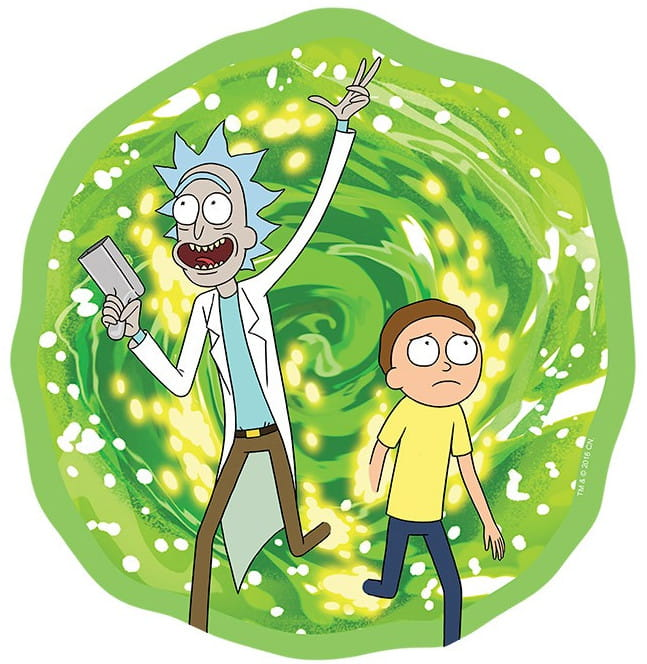

Cytat z serialu:
Rick – Słuchaj, Jerry. Ja-ja-ja nie chcę przekraczać żadnych granic czy coś. To twój dom. Twój świat. Jesteś prawdziwym Juliuszem Cezarem, ale powiem ci, co myślę na temat szkoły, Jerry. To strata czasu. Kupa biegających ludzi bez celu i zderzających się ze sobą. Ko-ko-koleś z przodu pyta: „Ile jest dwa plus dwa?”, a ludzie z tyłu odpowiadają „cztery”. Po-po-potem dzwoni dzwonek, dają ci kartonik mleka i kartkę papieru i mówią ci, że możesz iść kupę czy coś. To nie jest miejsce dla mądrych, Jerry. Ja wiem, że to nie jest popularna opinia, ale tak właśnie myślę.
Rick i Morty – amerykański animowany serial telewizyjny dla starszej widowni tworzony przez Justina Roilanda oraz Dana Harmona dla Adult Swim. Produkcja w oryginalnym zamyśle miała być parodią filmu Powrót do przyszłości, stworzoną przez Roilanda na potrzeby festiwalu filmowego Channel 101.